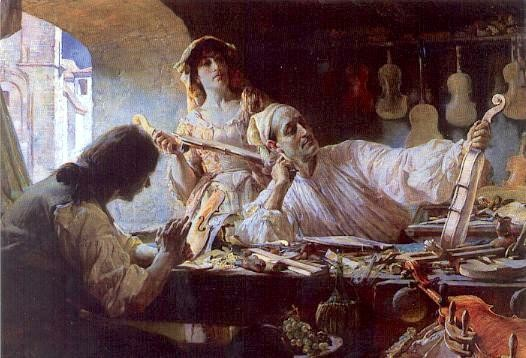
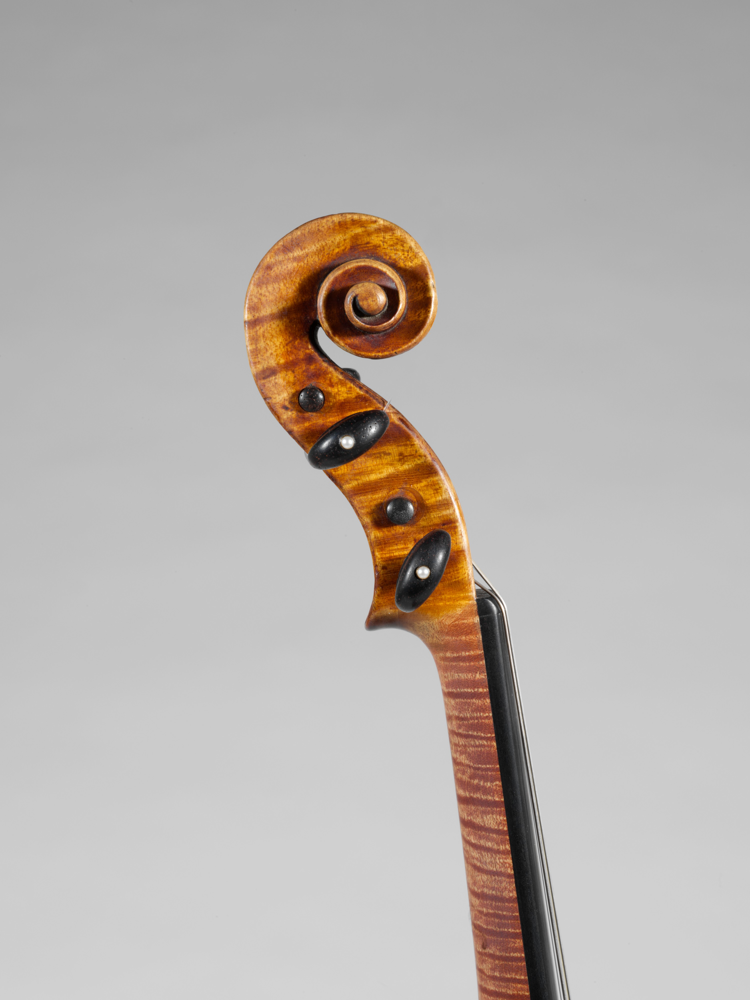

Flagship Stradivarius Offering
This page showcases a premier Stradivarius violin, one of the finest examples of Cremonese craftsmanship available through our store. We are accepting offers only by written letter from serious collectors, with a private auction to follow between qualified applicants.
Interested clients should submit a formal inquiry by letter. Once serious responses are received, a private auction will be arranged exclusively for the shortlisted parties.
Historic Violin by Antonio Stradivari
This Stradivarius represents a rare opportunity to acquire a violin from the workshop of Antonio Stradivari, the artisan whose instruments set the standard in tone, balance, and legacy.
Provenance and condition details:
- Historic Cremonese construction from the late 17th century
- Expertly maintained with original varnish elements preserved
- Presented with handwritten provenance and conservation report
- Reserved for serious applicants only; no online checkout available


This flagship offering is curated for the most discerning collectors. To preserve the rarity and exclusivity of the instrument, we do not accept general inquiries online; all offers must arrive by letter and will be evaluated silently before a private auction is scheduled.